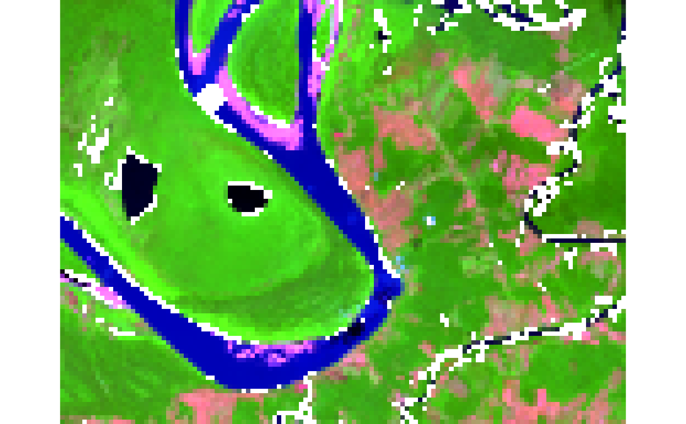
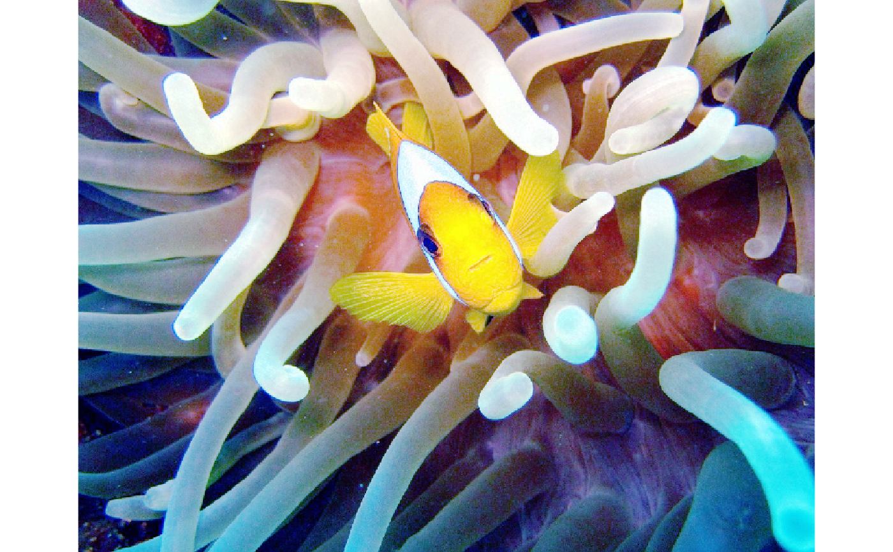

Render image data processed by SNIC either from in-memory numeric arrays
or from terra::SpatRaster objects
provided by the terra package. The function supports plotting a
single band or a three-channel RGB composite, with optional overlays for
seed points and segmentation boundaries.
Usage
snic_plot(
x,
...,
band = 1L,
r = NULL,
g = NULL,
b = NULL,
col = getOption("snic.col", grDevices::hcl.colors(128L, "Spectral")),
stretch = "lin",
seeds = NULL,
seeds_plot_args = getOption("snic.seeds_plot", list(pch = 20, col = "#00FFFF", cex =
1)),
seg = NULL,
seg_plot_args = getOption("snic.seg_plot", list(border = "#FFD700", col = NA, lwd =
0.6))
)Arguments
- x
Image data. For the array method this must be a numeric array with dimensions
(height, width, bands). For the raster method the object must be aSpatRaster.- ...
Additional arguments forwarded to the underlying plotting function. For arrays, these are passed to
graphics::image(); for raster inputs they are forwarded toterra::snic_plot()(single band) orterra::plotRGB()(RGB composites).- band
Integer index of the band to display when producing a single-band plot. Defaults to the first band.
- r, g, b
Integer indices (1-based) of the bands to use when composing an RGB plot. All three must be supplied to trigger RGB rendering and the image must contain at least three bands.
- col
Color palette used for single-band plots. Ignored for RGB plots.
- stretch
Character string indicating the contrast-stretching method. Determines how band values are scaled to the \([0, 1]\) range before plotting. One of:
"lin": linear stretch based on the minimum and maximum values (default)."hist": histogram equalization (redistribute values to equalize the color histogram).
Non-numeric arrays or bands with only constant values are plotted as-is.
- seeds
Optional object containing seed coordinates with columns
randc. Alternately, it can haveSpatRasterinputs,latandloncolumns expressed in"EPSG:4326".- seeds_plot_args
Optional named list with additional arguments passed to
graphics::points()when drawingseeds. Defaults togetOption("snic.seeds_plot"), falling back tolist(pch = 16, col = "#00FFFF", cex = 1)which mirrors the internal.plot_seeds()defaults.- seg
For
SpatRasterinputs, an optional segmentation raster (integer labels) or already vectorized segments (aterra::SpatVector) to be drawn over the image.- seg_plot_args
Named list of arguments forwarded to
terra::snic_plot()for thesegoverlay. The argumentadd = TRUEis set automatically when not supplied. Defaults togetOption("snic.seg_plot"), falling back tolist(border = "#FFD700", col = NA, lwd = 0.6)which matches the defaults used inside.plot_segments().
Examples
if (requireNamespace("terra", quietly = TRUE)) {
tiff_dir <- system.file("demo-geotiff",
package = "snic",
mustWork = TRUE
)
files <- file.path(
tiff_dir,
c(
"S2_20LMR_B02_20220630.tif",
"S2_20LMR_B04_20220630.tif",
"S2_20LMR_B08_20220630.tif",
"S2_20LMR_B12_20220630.tif"
)
)
# Load and optionally downsample for faster segmentation
s2 <- terra::aggregate(terra::rast(files), fact = 8)
# Visualize
snic_plot(s2, r = 4, g = 3, b = 1, stretch = "lin")
}

# Simple array example using bundled JPEG
if (requireNamespace("jpeg", quietly = TRUE)) {
img_path <- system.file("demo-jpeg/clownfish.jpeg",
package = "snic",
mustWork = TRUE
)
# Load
rgb <- jpeg::readJPEG(img_path)
# Visualize
snic_plot(rgb, r = 1, g = 2, b = 3, stretch = "none")
}
